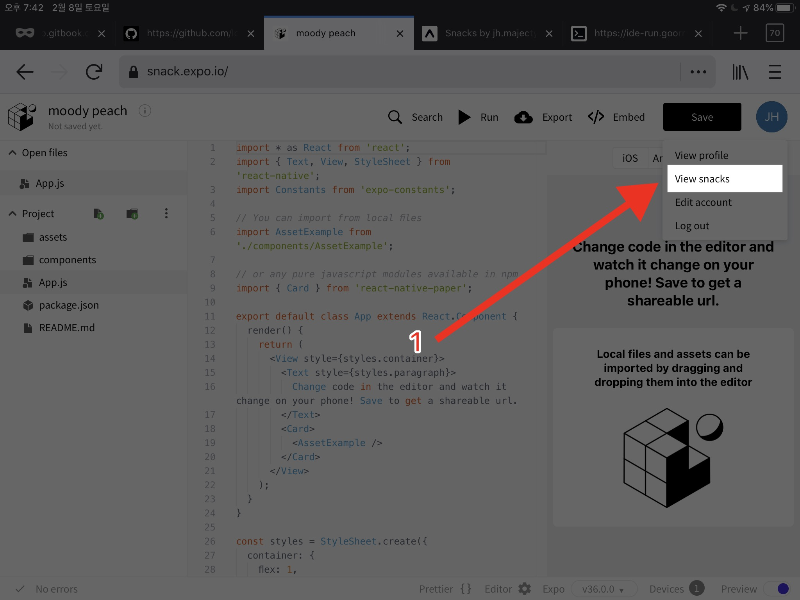
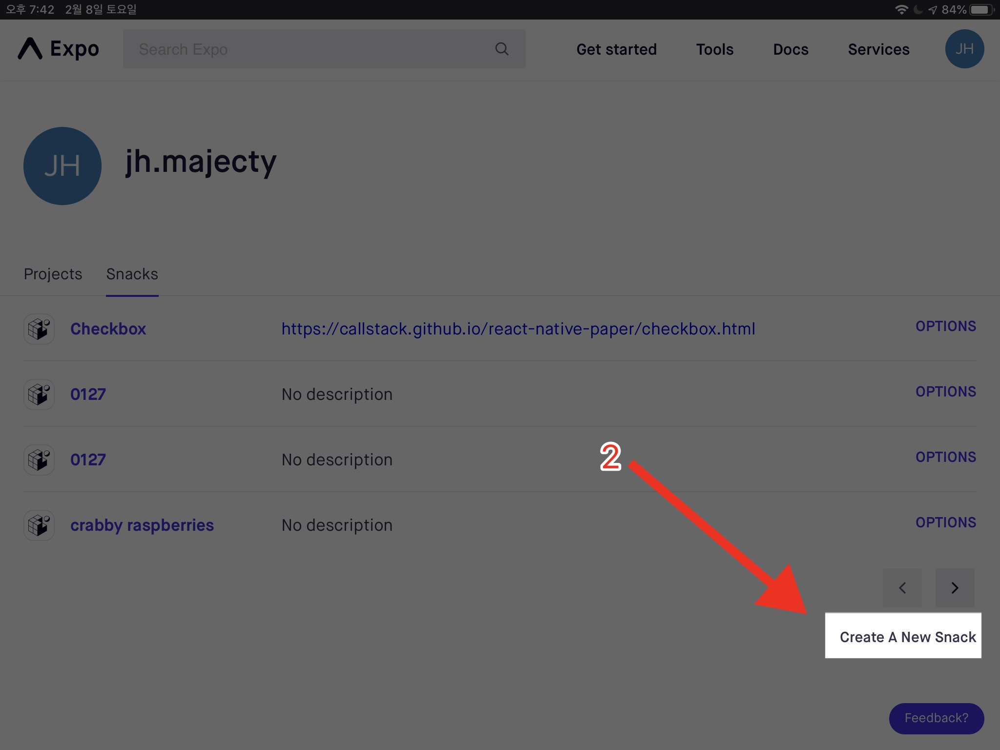
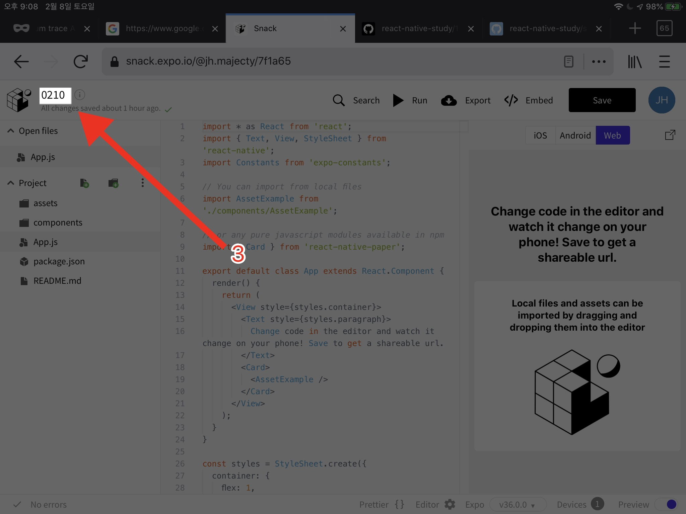

새 프로젝트 만들기
새 프로젝트를 snack.expo.io에서 새 프로젝트를 만들자.
view snacks 로 이동
snack.expo.io에 접속하면 예시 프로젝트가 보인다. 오른쪽 위의 동그란 아이콘을 클릭 후 "view snacks" 버튼을 누르자. 
new snack 이미지
"View snacks" 버튼을 눌렀다면 내가 만든 snack의 리스트를 볼 수 있는 페이지가 뜬다. 오른쪽 아래에 "create a new snack" 버튼을 눌러서 새 스낵을 만들자.

스낵의 이름 설정하기
snack을 생성한 뒤 왼쪽 위에서 snack의 이름을 바꾸자. 
생성된 프로젝트 살펴보기
생성된 파일들을 살펴보자. 1월 27일에 봤던 코드와 같은 코드가 생성되어 있다.